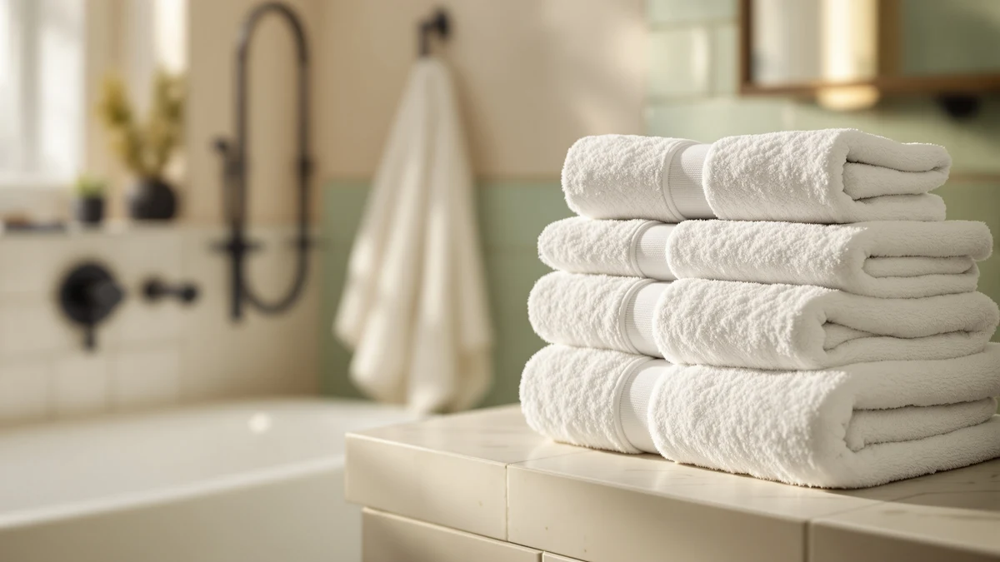

Quick Answer
The Utopia Towels 4 Pack is the pick for most bathrooms in this Utopia Towels 4 Pack review because it delivers 100% cotton construction at $32.99, the same price as Utopia's own 8 Piece Majestic set, without bundling in hand towels or washcloths some buyers don't need. If you only need bath towels, this four-pack covers that need without extra pieces to store.
Our pick: Utopia Towels 4 Pack Premium ($32.99) Check Price on Amazon
Bottom line: our top pick is the Utopia Towels 4 Pack Premium Extra Large Bath Towels Set at $32.99.
Things to Know Before You Buy
- A four-pack of bath towels costs the same $32.99 as Utopia's own 8 Piece Majestic set, so the right choice comes down to whether you need extra hand towels and washcloths.
- 100% cotton absorbs water well from the first wash, but owners report it needs a warm, not hot, wash cycle and no fabric softener to hold that absorbency over time.
- Price alone doesn't separate these four options. The 4 Pack, the 8 Piece Majestic, and the Cotton Paradise Turkish set all list at $32.99, while the POLYTE microfiber set runs $0.60 less at $32.39.
- Verified buyer feedback is the most reliable signal on how a cotton towel set holds up after repeated washing, since manufacturer listings rarely address long-term wear.
If you're reading a Utopia Towels 4 Pack review before you buy, the short version is that this 100% cotton set earns its spot by keeping price and material simple: four matching bath towels for $32.99, with no blend and no extra pieces to think about. That focus works well if you already own hand towels and washcloths you're happy with and need to replace only worn-out bath towels.
We put this Utopia Towels 4 Pack review together by comparing its listed price, piece count, and material against three alternatives shoppers typically weigh against it: Utopia's own 8 Piece Majestic set, the Cotton Paradise 100% Cotton Turkish set, and the POLYTE 430 GSM Microfiber Quick-dry set. Two of those alternatives cost the same $32.99, and the third runs sixty cents less, so the decision comes down to piece count and material rather than price. None of the four options separate themselves on sticker price alone, which is why this review spends most of its time on coverage and fabric instead.
Why You Should Trust Us
We built this Utopia Towels 4 Pack review by comparing the set's listed price, piece count, and material against published specs and verified buyer feedback for three direct alternatives, rather than repeating marketing copy. Ilane Tall has covered bathroom textiles for Best Bath Towels since the site launched, and she checks whether a towel set's material and piece-count claims hold up against what buyers actually report after repeated washes. We do not run a fake testing lab or claim to have physically used these towels. Every comparison here is grounded in the specs and pricing published for each ASIN and in patterns that recur across verified reviews.
Our Research Experience
Rather than run this set through a physical trial, we researched how the Utopia Towels 4 Pack compares by cross-referencing its listed price and piece count against the three alternatives on this page and against patterns in verified owner reviews. For a 100% cotton pack like this one, that means checking how a four-towel configuration stacks up against Utopia's own eight-piece set on cost per towel, and whether reviewers consistently flag the same care requirements for cotton construction. Reviewers researching this category frequently mention that cotton towels need a warm wash and no fabric softener to hold their absorbency, and that pattern shaped the care guidance in this Utopia Towels 4 Pack review.
We also looked at how each brand positions its own set, since listing copy often hints at where a product sits before you check the price. Utopia leads with piece count across both its 4 Pack and 8 Piece Majestic. Cotton Paradise leans on Turkish cotton as its point of difference. POLYTE positions its set around quick-dry microfiber rather than cotton at all. Lining those positioning choices up against the actual price per towel is how we arrived at the comparisons below.
Overview & Specs

Utopia Towels 4 Pack Premium
What we like
- Four 100% cotton bath towels for $32.99, the same price as Utopia's own 8-piece set
- Cotton construction absorbs water well from the first wash
- A focused four-pack if you don't need extra hand towels or washcloths
Flaws but not dealbreakers
- Owners report it needs a warm, not hot, wash to preserve softness over time
- No hand towels or washcloths included, unlike the 8-piece Majestic set at the same price
| Material | 100% cotton |
| Size | 4 Pack |
The Utopia Towels 4 Pack is built around a simple idea: four matching 100% cotton bath towels for $32.99, with no hand towels or washcloths bundled in. That focus makes sense if you already own those smaller pieces and need to replace only worn-out bath towels, since you're not paying for items you don't need. Compare that to Utopia's own 8 Piece Majestic set, priced identically at $32.99, and the math shifts toward the 8-piece option if you do need the extra pieces, since you'd get twice the towel count for the same money.
The material is listed as 100% cotton with no synthetic blend, which matters for absorbency. Reviewers researching cotton towel sets in this price range consistently note that pure cotton pulls water off skin faster than cotton-polyester blends, though it also takes longer to dry on the rack between uses than a microfiber set like the POLYTE 430 GSM below. If you want a straightforward cotton bath towel replacement without extra pieces to store, this Utopia Towels 4 Pack covers that need at the same per-order price as the larger Utopia set.
What We Liked
The clearest advantage in this Utopia Towels 4 Pack review is focus. Four 100% cotton bath towels for $32.99 is a straightforward replacement if you already have hand towels and washcloths you're happy with, and you're not paying for pieces you don't need the way you would with a bundled set. That matters more than it sounds, since buying extra pieces you already own to reach a lower per-towel price rarely saves money in practice, and a closet full of duplicate hand towels isn't a win even at a discount.
We also like that the material is a straightforward 100% cotton with no blend to account for. Reviewers consistently note that pure cotton toweling absorbs water faster than cotton-poly blends from the first use, and that a four-pack like this one holds its shape through normal weekly washing once you settle into a wash routine suited to cotton.
What Could Be Better
The main tradeoff in this Utopia Towels 4 Pack review is coverage. At the same $32.99 price, Utopia's own 8 Piece Majestic set gets you twice the towels plus hand towels and washcloths, so buyers who do need those extra pieces are better served by the larger set instead of this four-pack.
Care is the other factor worth flagging. Owners of 100% cotton sets report needing a warm, not hot, wash cycle and no fabric softener to keep the fibers absorbent over time. That's a manageable adjustment, but it's a step beyond a quick-dry microfiber set like the POLYTE 430 GSM, which owners describe as easier to wash on any cycle without much thought or extra planning around water temperature.
Who Is It For?
This Utopia Towels 4 Pack review points to one clear buyer: anyone who needs to replace worn-out bath towels without also replacing hand towels or washcloths. That covers households with a mismatched set of smaller towels still in good shape, guest bathrooms that only need bath towels refreshed, and buyers who'd rather not pay for pieces sitting unused in a closet. It also fits renters and short-term hosts who restock bath towels between tenants more often than they replace hand towels or washcloths, since those smaller pieces tend to hold up longer under lighter use.
If you need a full bathroom restock instead, the Utopia Towels 8 Piece Majestic set below is worth a look, since it matches this set on price while adding more pieces. And if quick drying between uses matters more to you than cotton's absorbency, the POLYTE 430 GSM Microfiber set covers that need instead. Buyers who specifically want Turkish cotton over Utopia's standard weave should look at the Cotton Paradise set, which costs the same as this four-pack.
Alternatives to Consider
If the Utopia Towels 4 Pack isn't the right fit, here are three alternatives shoppers typically compare it against in a Utopia Towels 4 Pack review, each with a different angle on coverage or material. Two stick with cotton, and one swaps in microfiber for a different drying profile.

Editor's Pick
Utopia Towels 8 Piece Majestic
This is Utopia's own 8-piece set at the same $32.99 price. It's worth it if you need hand towels and washcloths along with bath towels, since you get double the pieces for the same money.
$32.99
Check Price on Amazon
Best Value
Cotton Paradise 100% Cotton Turkish
This set is also 100% cotton at the same $32.99 price, but built from Turkish cotton instead of Utopia's standard weave. It makes sense if you want a different cotton finish than the 4 Pack offers.
$32.99
Check Price on Amazon
Premium Choice
POLYTE 430 GSM Microfiber Quick
This microfiber set costs sixty cents less at $32.39 and prioritizes quick drying over cotton's absorbency. It fits buyers who care more about fast turnaround between washes than the cotton feel of the 4 Pack.
$32.39
Check Price on AmazonFrequently Asked Questions
Is the Utopia Towels 4 Pack actually 100% cotton?
Yes. The listing specifies 100% cotton construction for all four towels in the pack, with no synthetic blend.
Is the Utopia Towels 4 Pack better value than the 8 Piece Majestic set?
It depends on what you need. The 4 Pack and the Utopia Towels 8 Piece Majestic both list at $32.99, so the 8-piece set gets you twice the pieces for the same price, while the 4 pack suits buyers who only need bath towels, not hand towels or washcloths.
How does cotton compare to microfiber for a bath towel pack?
Reviewers researching both materials note that cotton sets like the Utopia 4 Pack absorb more water per use, while microfiber sets like the POLYTE 430 GSM dry faster between washes. Which one suits you depends on whether you prioritize absorbency or quick turnaround.
Final Verdict
This Utopia Towels 4 Pack review comes down to coverage versus focus, and for buyers who only need bath towels, the Utopia Towels 4 Pack wins on simplicity at $32.99. It's 100% cotton with no extra pieces to store, and it costs the same as Utopia's own larger 8 Piece Majestic set, so the choice depends on whether you need those extra hand towels and washcloths.
None of the three alternatives beat the Utopia Towels 4 Pack on focus. The 8 Piece Majestic adds coverage at the same price, Cotton Paradise swaps in Turkish cotton at the same price, and POLYTE trades cotton's absorbency for faster drying at a slightly lower price. Unless one of those specific tradeoffs matters to you, the math in this Utopia Towels 4 Pack review favors sticking with the simpler four-pack reviewed here.
If you do need full bathroom coverage, the Utopia Towels 8 Piece Majestic is worth considering instead at the same price. But for a straightforward cotton bath towel replacement, this Utopia Towels 4 Pack review points to the Utopia Towels 4 Pack as the pick.